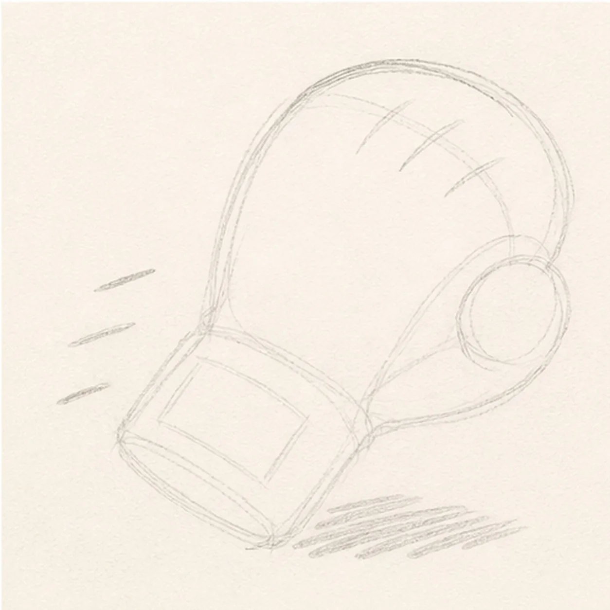
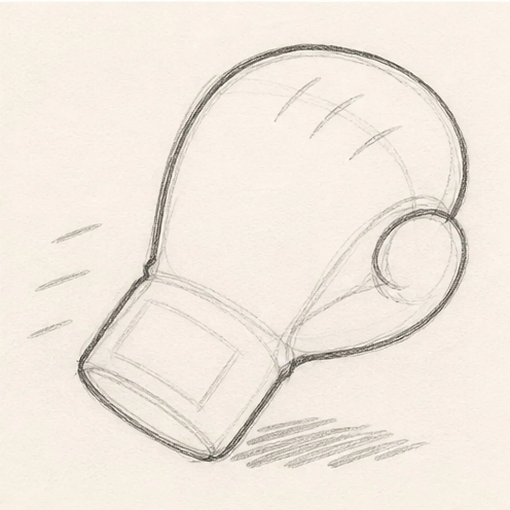
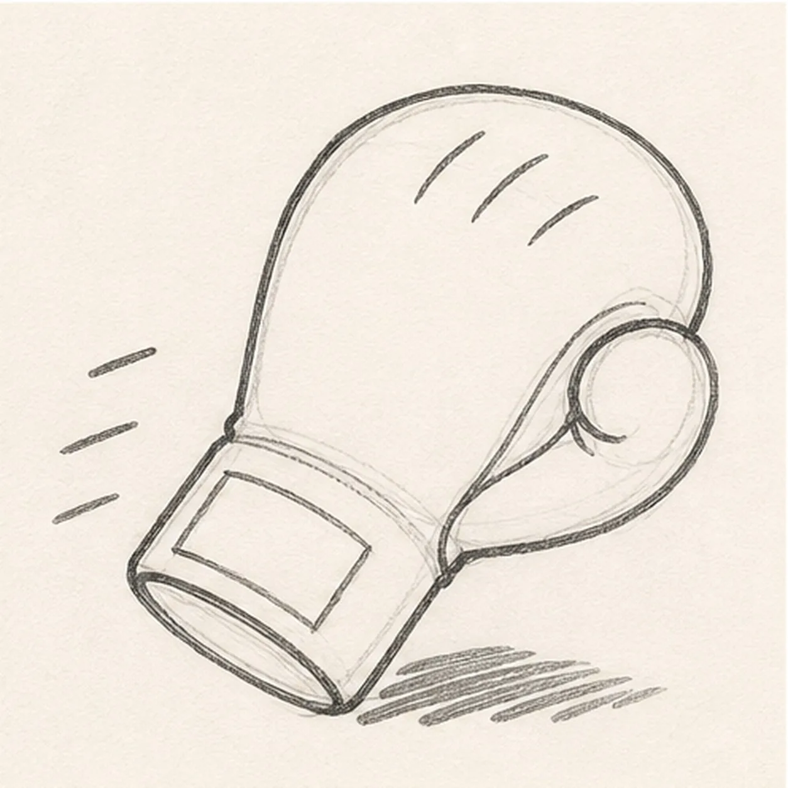
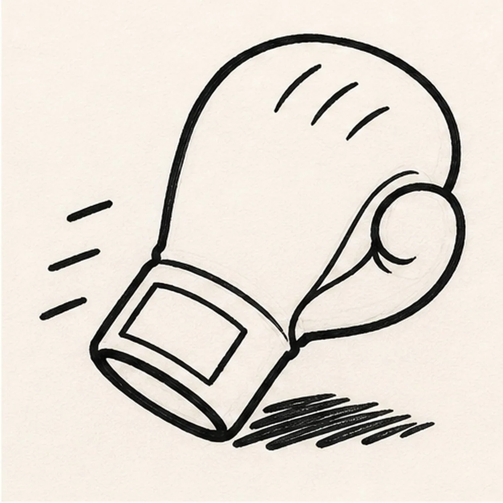
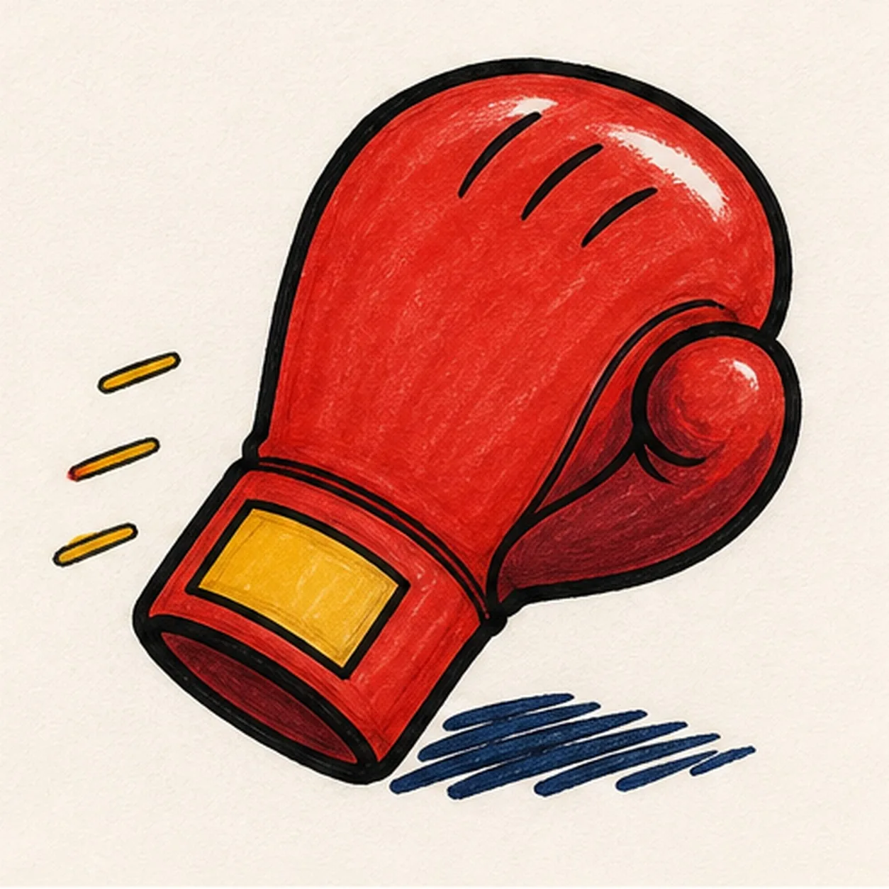

Felt-tip marker mode
Let's draw a cartoon boxing glove
Treat this as one playful practice round: sketch the idea loosely, simplify the shapes, then commit with confident marker outlines and bright fills.
-
01

Block the punch angle
Use pale construction to place the tilted knuckle mass, curled thumb, narrow wrist, wide cuff, blank patch, curved palm seam, three knuckle creases, exactly three motion dashes, and broken shadow.
Marker tip: Ghost the big mitten-like envelope before touching down, then reserve the thumb and cuff overlaps. The palm seam should stop at the thumb, the wrist edges should stop at the cuff, and all three dashes should stay outside the glove.
-
02

Shape the glove silhouette
Wrap the guides with one puffy boxing-glove contour, curled thumb, narrow wrist, and wide cuff while preserving the patch, seam, crease, motion, and shadow routes.
Marker tip: Pull the outer knuckle curve in one relaxed pass and keep a small pinch where the thumb joins the palm. Check the open space around the cuff so the diagonal angle stays lively rather than upright.
-
03

Add seams and motion
Clarify the curved palm seam, exactly three short knuckle creases, one blank cuff patch, and exactly three short motion dashes without changing the glove silhouette.
Marker tip: Curve the palm seam around the thumb base and vary the three crease lengths. Keep the motion dashes parallel enough to suggest one direction but uneven enough to feel hand drawn.
-
04

Ink the impact contour
Trace only the established glove, thumb, cuff, blank patch, seam, three creases, three motion dashes, and broken shadow with thick handmade black felt-tip.
Marker tip: Ink the inner thumb and seam first, let them dry, then pull the heavy outer contour. Use slightly lighter pressure on the creases and dashes so the glove silhouette remains dominant at thumbnail size.
-
05

Fill the boxing red
Add tomato red to the glove, burgundy to the thumb underside and seam areas, mustard to the blank cuff patch and three motion dashes, and deep navy to the broken shadow.
Marker tip: Fill inward from the black edges and follow the rounded knuckle form with visible marker strokes. Leave broad white paper highlights on the upper glove and a smaller highlight on the thumb instead of polishing the fill flat.
-
06
Tighten the knockout finish
Thicken selected established black edges, even the existing marker fills, deepen the broken shadow, clarify paper highlights, and erase only pale guides that distract.
Marker tip: Count one glove, one thumb, three knuckle creases, one blank cuff patch, and three motion dashes before stopping. Change the glove color if you like, but keep the face-free silhouette and clean overlap order.
![Handmade felt-tip marker drawing of one mischievous cool-gray raccoon peeking from one open teal trash can with exactly two coral-lined ears, two asymmetric charcoal mask patches, one half-lidded eye and one wide eye glancing toward the right side of the page, one raised brow, one dark nose, one crooked grin with one small tooth, exactly two gray paws gripping the front rim, one curled gray tail with exactly three charcoal bands, exactly two can handles, exactly four long can ribs, one tall open-paper highlight, two mustard accent blocks, one diamond-shaped dent, thick imperfect black outlines, visible marker streaks, and one broken deep-navy shadow](../assets/raccoon-peeking-from-trash-can-finished-v1.webp)